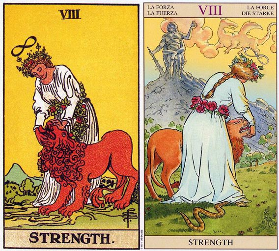

塔罗牌力量（Strength）解释
相关语：意志 对应星象：白羊座
力量 THE STRENGH 象征内心的力量足以面对任何的困难。 逆位代表逃避内心的欲望和恐惧，消极抵抗。
力量牌暗示你拥有足够的内在力量去面对人生。在力量牌上面，一个女人正在安抚一头狮子。尽管狮子可以轻易的撂倒她，然而他却在她的爱和温柔当中平静了下来。此时天际晴朗无云，而
一串花环围绕于她的腰间。头上方代表无限的符号暗示，她正开发出一种无穷无尽的能量来源。
狮子象征感觉、恐惧和欲望，在战车牌中它们受理智所控制，而现在则已显现出来，等着你去面对和尊重它们。力量采取了更进一步的动作，即野兽或人性中激情的那一面浮现出来了，等着你以力量和勇气来面对它们。
这狮子（或内在的野兽性）轻易的接收她双手的指挥，因为他感觉到，在她的爱之后的是她的力量。她有一股内在的力量或信心，让她能够面对那些战车必须加以控制的东西。她明白狮子是一种能量的来源，要驯服他，她也需要付出一些能量。为了活得充实，她需让她的高层次自我和低层次自我和谐地一起工作。如果其中一者支配了另一者，力量就会向恐惧竖白棋，而且产生控制生活的需求。
力量是一张代表占星学上狮子座的牌。其他代表狮子座的牌还有太阳和权杖皇后。另外象征意义没有那么明显的是其他权杖的宫廷牌。狮子座所必须学习的部分课题是发自内在的力量。有时候狮子座的人会拼命想要投射出一种坚强而自信的形象，而内心又感觉这不太合适。其实通常狮子座的确是如它们所装出来的那么坚强，可惜他们自己并不知道。他们所要学习的课题包括：认清他们的确就像他们装出来的这么坚强，可惜它们自己并不知道。他们所要学习的课题包括：认清他们的确就像他们装出来的这么坚强，而发现它的方法就失去测试他们的力量。
在其他的塔罗牌中，力量是第十一张牌，而正义则是第八张。亚瑟*伟特将这两张牌的位置调换过来，因为他认为力量更适合放在第八的位置上。在命理学上，第八是一个代表权力和力量的数字，所以如果你再检视一下小阿尔克纳的牌，你将发现所有的八都和力量有关。
权杖八是自由流动，圣杯八是远离某种不充实的状态，有力量继续前进。宝剑八是明白他人及你的信念如何束缚了你，而你又该如何利用你内在的力量来释放自己、获得自由。五角星八告诉你该如何运用你内在的力量，于过去的成功上建立起更稳的根基。
力量（Strength）牌面解释
这张牌中胜利女神弯着腰正在抚摸一头凶猛的狮子，并用她的温柔与爱来安抚着怀中代表恐惧的狮子，它是爱与坚强意志的象征。正是因为有了爱与意志，人类才能克服困难，在历史的长河 中不断前进。狮子代表人类的本能，而美女则象征爱情和服从，二者必须保持和谐，互相支持才能成为征服世界的力量。此外它还意味着你有能力解决现在所面临的困难局面，并对自己内在的力量充满信心。
解牌时要注意“刚柔并济”，人类本能是恐惧的，需要有理智来控制和安慰；而又不能失去本能的动力，理智还要给予鼓励。由此可以看出“平衡”在塔罗牌的解释中是最重要的。
力量（Strength）正位解释
不屈不挠、全力以赴、克服难关、坚强的信念、旺盛的斗志、刻苦的努力、超凡的勇气、神秘的力量、轰轰烈烈的能够经受考验的牢固爱情
当牌面正立时，在事业上你不断突破自我，上司和客户都对你有充分的信心，成就接踵而来。在爱情上，你将发展一段真正亲密的感情，你们全心投入，相互倾诉，丝毫没有距离感。
力量（Strength）逆位解释
疑心过度、犹豫不决、缺乏实力、没有耐心、危险的赌注、失去自信、失去别人的信任、故弄玄虚、自大、蛮干、禁不住诱惑、爱情无法持久
当牌面倒立时，内心的恐惧使你畏首畏尾，进而遭遇事业的瓶颈，感到失去了自信。在爱情上患得患失，失去清醒的判断。
大体上的意义
这张力量牌意味你有能力面对生活和困难的环境，或者有能力以希望、内在力量及勇气去做改变。勇气并不代表你没有恐惧，而是虽然你有恐惧，你还是愿意对某人或某事有所承诺。
这张牌象征你拥有内在的力量来面对你内在的恐惧和欲望，而非让它们屈服于你的意志。在健康的分析方面，这张牌可能是有关心脏或脊椎方面的毛病，不过这些毛病也可以透过内在能量来克服，而且这张牌也暗示你本身拥有这种能量。
倒立的力量
力量牌倒立会导致软弱。你面对人生的勇气已经减少了，徒留一种被击垮或了无希望的感觉。它可能暗示内心的痛苦，你的激情和欲望正像你提出给予它们满足的要求，这令你的理智受到威胁，怕会失去控制。
它代表在某段时期内，传统的事业或生活方式的安全性似乎颇具吸引力。任何可以让你逃避热情和欲望的事物，似乎都值得拥有，因为你害怕热情和欲望会摧毁你所自觉的人格，或你为自己所建立的安全模式。任何会限制你去面对自己的能力的事情，可能都会被认为是需要的。譬如，变成工作狂、过于热衷你的事业，或是以一些不必要的事情来填满你所有的时间。
有时候当你在生活中感到无力时，你可能会去找你可以支配的某个人或事物，来帮助自己再度感到强而有利。在这段其间你可能会发现自己在任何关系中，对别人不是太颐指气使，就是过分恭顺。
学习如何从爱里面找到力量，又是狮子座的另外一项课题。也就是说，要如何找到内在的力量，就需要接纳某人以便让对方可以亲近你。如果
狮子座的人无法完成这个课题，他们可能觉得事业带给他们两性关系所无法提供的满足感，所以他们可能会牺牲掉两性关系，而取得事业上极大的成功。这是一个跷跷板式的安排。他们不是占尽优势，就是太过谦卑。他们可能在事业上获得极大的成就，或是得到圆满的两性人际关系，但是很少有同时两者兼得的。透过集中意志，狮子座可以驾驭其生活，并在某一方面得到成功，然而这只是回到战车所需的课题而已。狮子座的课题是要有勇气不去控制人生，而是以爱和同情来面对它。
两性关系上的意义
力量这张牌暗示你拥有足够的力量和勇气，让你可以在一段两性关系中发展出真正的亲密感，而不必试着要去控制它，或者被它所控制。你有充分的勇气可以处理任何可能发生的困难，而无需因恐惧而逃避。
在两性关系的分析中，这是一张积极的牌，因为它暗示和这关系中的人能够互相倾听及倾诉。他们的行动是来自内在的力量，而非出于恐惧，可以发展出真实的亲密感，不会有五角星六、或圣杯六那种限制性的角色。